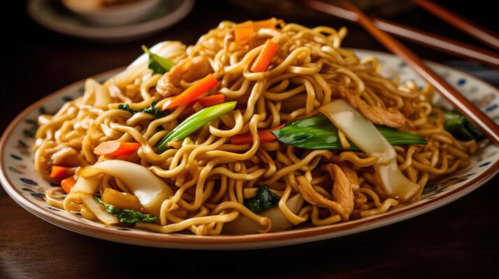

Burger
View Recipe
Ingredients
For the Patties:
1 lb ground beef (80/20 for best flavor)
1 tsp salt
1/2 tsp black pepper
1 tsp garlic powder (optional)
1 tsp onion powder (optional)
For Assembly:
4 hamburger buns
4 slices of cheddar cheese (or cheese of choice)
Lettuce leaves
Tomato slices
Pickles
Ketchup, mustard, and mayonnaise (to taste)
Instructions
Prepare the Patties:
In a bowl, combine the ground beef, salt, pepper, garlic powder, and onion powder.
Mix gently until just combined; avoid overworking the meat.
Divide the mixture into four equal portions and shape them into patties (about 3/4 inch thick). Make
a slight indentation in the center of each patty to prevent them from puffing up while cooking.
Cook the Patties:
Preheat a grill or skillet over medium-high heat.
Cook the patties for about 3-4 minutes on one side. Flip them and add a slice of cheese on top if
you want a cheeseburger.
Cook for an additional 3-4 minutes or until they reach your desired doneness (165°F for medium).
Toast the Buns:
If desired, toast the hamburger buns on the grill or in a skillet until golden brown.
Assemble the Burger:
On the bottom half of each bun, place a lettuce leaf, followed by the patty (with cheese if using).
Add tomato slices, pickles, and your choice of condiments (ketchup, mustard, mayonnaise).
Top with the other half of the bun.
Serve:
Serve immediately with fries, chips, or a side salad.

Noodles
View Recipe
For the Noodles:
8 oz noodles (egg noodles, ramen, or rice noodles)
For the Stir-Fry:
2 tbsp vegetable oil
2 cloves garlic, minced
1 small onion, sliced
1 bell pepper, sliced
1 carrot, julienned
1 cup broccoli florets
1 cup snap peas (or your favorite vegetables)
For the Sauce:
3 tbsp soy sauce
1 tbsp oyster sauce (optional)
1 tbsp sesame oil
1 tsp sugar
1/2 tsp black pepper
Garnish:
Chopped green onions
Sesame seeds (optional)
Instructions
Cook the Noodles:
Cook the noodles according to package instructions. Drain and set aside.
Prepare the Sauce:
In a small bowl, mix the soy sauce, oyster sauce, sesame oil, sugar, and black pepper. Set aside.
Stir-Fry the Vegetables:
Heat vegetable oil in a large pan or wok over medium-high heat.
Add the minced garlic and sliced onion, and sauté for 1-2 minutes until fragrant.
Add the bell pepper, carrot, broccoli, and snap peas. Stir-fry for about 5-7 minutes until the vegetables are tender-crisp.
Combine Noodles and Sauce:
Add the cooked noodles to the pan with the vegetables.
Pour the sauce over the noodles and toss everything together until well combined and heated through.
Serve:
Garnish with chopped green onions and sesame seeds if desired.
Serve hot and enjoy!
become a staple in your culinary repertoire.
Sandwich
View Recipe
For the Sandwich:
2 slices of bread (whole grain, white, or your choice)
2 tbsp mayonnaise (or hummus for a healthier option)
1/2 avocado, sliced
1 small cucumber, thinly sliced
1 small tomato, sliced
Lettuce leaves (or spinach)
Salt and pepper (to taste)
Optional: cheese slices, sprouts, or any other favorite veggies
Instructions
Prepare the Ingredients:
Wash and slice the cucumber and tomato.
Slice the avocado.
Assemble the Sandwich:
Spread mayonnaise (or hummus) evenly on one side of each slice of bread.
On one slice, layer the lettuce leaves, followed by the cucumber slices, tomato slices, and avocado.
Season with salt and pepper to taste.
If desired, add cheese or other toppings.
Finish the Sandwich:
Place the second slice of bread on top, mayo side down.
Press down gently to hold everything together.
Slice and Serve:
Cut the sandwich in half diagonally or vertically.
Serve with chips, pickles, or a side salad.

Samosa
View Recipe
Ingredients
For the Dough:
2 cups all-purpose flour
1/4 cup oil or ghee
1/2 tsp salt
Water (as needed)
For the Filling:
2 medium potatoes, boiled and mashed
1/2 cup green peas (fresh or frozen)
1 onion, finely chopped
1 tsp ginger-garlic paste
1 tsp cumin seeds
1 tsp coriander powder
1/2 tsp garam masala
1/2 tsp turmeric powder
1-2 green chilies, chopped (adjust to taste)
Salt (to taste)
Fresh coriander leaves, chopped (optional)
Oil (for frying)
Instructions
Prepare the Dough:
In a large bowl, mix the flour and salt.
Add the oil or ghee and mix until the mixture resembles breadcrumbs.
Gradually add water to form a soft, pliable dough. Cover the dough with a damp cloth and let it rest for 30 minutes.
Prepare the Filling:
Heat a tablespoon of oil in a pan over medium heat.
Add cumin seeds and let them sizzle for a few seconds.
Add the chopped onions and sauté until they turn golden brown.
Stir in the ginger-garlic paste, green chilies, and all the spices (coriander, garam masala, turmeric). Cook for a minute.
Add the mashed potatoes and peas, mixing well. Season with salt and cook for a few more minutes. Remove from heat and let it cool.
Assemble the Samosas:
Divide the dough into equal portions (about 8-10).
Roll each portion into a ball and flatten it into a circle (about 6 inches in diameter).
Cut the circle in half to form two semi-circles.
Take one semi-circle and form a cone by folding it over, sealing the edge with a little water.
Fill the cone with the potato filling, then seal the open edge by pinching it together. Ensure it is sealed well.
Fry the Samosas:
Heat oil in a deep frying pan over medium heat.
Once the oil is hot, carefully add the samosas in batches, making sure not to overcrowd the pan.
Fry until they turn golden brown and crispy, about 5-7 minutes. Remove and drain on paper towels.
Serve:
Serve the samosas hot with mint chutney or tamarind sauce.

Pizza
View Recipe
Ingredients
For the Dough:
For the Topping:
Prepare the Dough:
Preheat the Oven:
Shape the Pizza:
Add the Toppings:
Bake the Pizza:
Finish and Serve:
Remove the pizza from the oven and let it cool for a couple of minutes.Slice and serve hot!
Pasta
View Recipe
Ingredients
For the Pasta:
12 oz spaghetti (or pasta of choice)
1/2 cup extra-virgin olive oil
4-6 cloves garlic, thinly sliced
1/2 tsp red pepper flakes (adjust to taste)
Salt (for pasta water)
Fresh parsley, chopped (for garnish)
Grated Parmesan cheese (optional)
Instructions
Cook the Pasta:
Bring a large pot of salted water to a boil.
Add the spaghetti and cook according to package instructions until al dente. Reserve 1 cup of pasta
water, then drain the pasta.
Prepare the Sauce:
In a large skillet, heat the olive oil over medium heat.
Add the sliced garlic and sauté for about 1-2 minutes, or until it turns golden brown. Be careful
not to burn the garlic, as it can become bitter.
Add the red pepper flakes and sauté for an additional 30 seconds.
Combine Pasta and Sauce:
Add the drained spaghetti to the skillet, tossing it in the garlic oil to coat.
If the pasta seems dry, gradually add some reserved pasta water until you reach your desired
consistency.
Serve:
Remove from heat and toss in chopped parsley.
Plate the pasta and, if desired, sprinkle with grated Parmesan cheese.